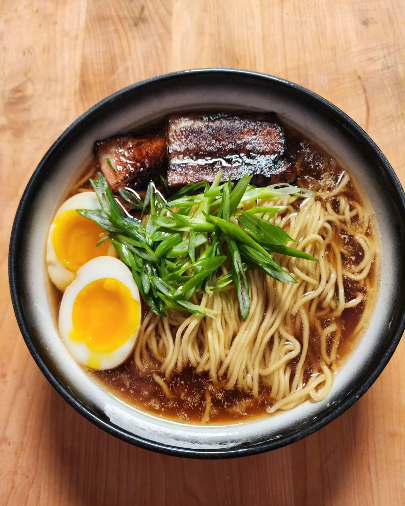

Japanese Shoyu Ramen
Back to Home
Japanese Shoyu Ramen

This clear broth seasoned with soy sauce seems very simplistic, but it belies the intense umami flavor within the soup. We use chicken and 4 types of dried seafood to create an incredibly savory broth that is seasoned with a soy sauce tare that gives the broth a bit of sweetness and wonderful complexity. The best thing about this recipe is that we use a pressure cooker that not only helps extract all the flavor very quickly but also creates a beautifully clear broth.
| Prep Time |
10 minutes |
| Additional time |
10 mins |
| Total Time |
1hr 55 mins |
| Total Time |
2hrs 15 mins |
| Servings |
6 |
Japanese Shoyu Ramen
Broth:
- 1 (2 1/2 pound) whole chicken, cut into pieces
- 1 cup dried scallops
- 1 cup dried anchovies
- ¼ cup dried shrimp
- ¼ cup bonito flakes
- 1 (1 inch) piece ginger, thinly slices, divided
- 1 (4 inch) piece dashi kombu (dried kelp)
- 3 quarts water
Tare Sauce:
- 1 cup soy sauce
- ½ cup mirin
- ½ cup sake
- 8 green onions
- ½ cup bonito flakes
- ¼ cup white sugar
- 8 cloves garlic, crushed
- 1 (4 inch) piece dashi kombu (dried kelp)
- 6 (3 ounce) packages cooked ramen noodles, or to taste
Directions
- Place chicken, scallops, anchovies, shrimp, bonito flakes, half the ginger, and kombu in an electric pressure cooker. Add water; close and lock the lid. Select the Soup setting; set timer for 90 minutes according to manufacturer's instructions. Allow 10 to 15 minutes for pressure to build.
- Release pressure using the natural-release method according to manufacturer's instructions, 10 to 40 minutes. Strain broth through a colander or fine-mesh sieve. Skim the fatty oil off the top of the broth.
- Combine soy sauce, mirin, sake, green onions, bonito flakes, sugar, garlic, and kombu in a medium saucepan over high heat. Bring to a boil. Reduce heat to low and simmer until flavors blend, about 10 minutes. Strain tare sauce through a fine-mesh sieve into a bowl.
- Pour 2 tablespoons of tare sauce into a large bowl. Ladle in about 2 cups of broth. Add 1/6 of the ramen noodles. Repeat with remaining tare, broth, and ramen.
- Serve and enjoy!
Cook's Notes:
- Substitute 3 pounds of chicken bones for the whole chicken if desired.
Add any toppings that you like, such as chashu (see my recipe), menma, corn, toasted seaweed or soft boiled egg. Garnish with green onions.